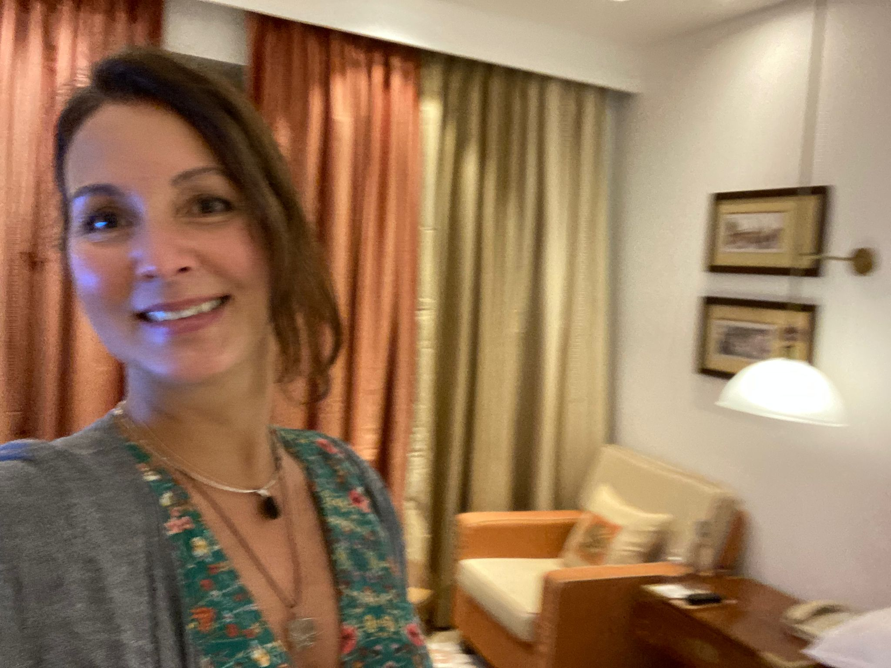

BECOME A MEMBER
Children at Mercy Primary School are talented in crafts, making bids, paper envelops and many more. They are doing all they can to develop their talents in various aspects of art crafts and many more. These children are also talented in playing football both the boys and girls alike. We are doing all we can to help them develop their talents because in turn, such talents may result in career for some and help them support themselves and their dependants.
BECOME A VOLUNTEER
We are encouraging all those who can spare some of their precious time to volunteer at Child Smile Foundation, we need people who can help us organize our files in the office, work regularly to update our website, teach English, Mathematic or Science. These subjects are very important for the future of the children. We also need some people who can teach them hands on skills such as carpentry, tailoring, hair cutting, braiding hair, lessons about hygiene especially for the child girl and many other things that can benefit all these children in the future.
Many retired professional men and women are out there who can use their present circumstances to pass on their talents to this new generation. We cannot afford to let these professionals just die and disappear with all the great wealth of knowledge they have acquired over the years. It is vital if they can pass on such skills and knowledge to others especially those who could never attain such honor by themselves. By so doing we keep these professionals alive and many will continue to benefit from them even when the owners had passed away

The knowledge of computer is inevitable in this era. children need to learn computer lessons if they are to be successful in this world. Everything has turned digital from business to education, and social life is more digital than ever before. Therefore here at Mercy Primary School, we are doing our best to introduce our learners to this very important aspect of education. many of them may not even afford to learn more except through the provision of online kind of education which is growing every day in the current society.
BECOME A FUNDRAISER
You can fundraise for one of our projects like building a classroom, painting a classroom, you can even fundraise to pay one of our teachers at Mercy Nursery and Primary School. As a project that supports orphans and vulnerable children, we use the principle of equalizing, where one child can pay school fees and it supports another child whose parents are unable to pay school fees for their children. For this reason, we try our best to make sure that we raise funds to pay teachers so that those who cannot afford to pay school fees can also benefit in the program. You can also fundraise for a meal for a learner or a group of learners because many learners spend the whole day at school without a meal, learning on an empty stomach is a very difficult endeavor. It is our humble request to all our friends, and most especially friends of children around the world to support our project.
BECOME A SPONSOR
Our organization is appealing to all good Samaritans out there to support vulnerable children in their academic journey. Currently CSF is providing education to more than 500 children with evident need for support. Help one and make a difference. You can help one child or a group of children.
If you wish to sponsor a child at Mercy Nursery and Primary School, please do not hesitate to contact us by filling in the contact us form to express your willingness to sponsor a child or a group of children to receive education. We will be very glad to provide you with all necessary information on how you can start sponsoring a child or a group of children today!
WAYS IN WHICH YOU CAN BE INVOLVED
There are many ways in which you can be involved in supporting orphans and vulnerable children in Ugands in general, and here in Wakiso District in particular. Some of the most practical ways you can support orphans and vulnerable children include:
- Pray for an Orphan
- Send a flower of love to Orphans
- Share their Stories with your frinds and relatives
- Become a Host Family
- Help Families Stay Together
- Give Your Financial Support
- Sponsor the Education of an Oprhan or Orphans
- Consider Foster Care
- You can give them gifts
- If you are a parent and have children, take great care of your family.

GROUP SPONSORSHIP PROJECT
Group Sponsorship project is a group fundraising project where members subscribe to donating 5EUROS each month to support the education of the most vulnerable children in our school community. Whenever we collect funds enough to education one child at least for one year, we assess the needs of the most needy and allocate the funds to one child after selection. We will keep updating the members of the group Sponsorship about the outcome and identity of the child selected so that members who donated the funds know how the raised funds are being utilized to support vulnerable children in our school. To make this aspect of our project successful, members are urged to invite their friends to be part of this noble cause. By supporting this initiative, we shall support many more vulnerable children and orphans to access education, an element crucial in any child's life to be prepared for a successful life in the future.

These Children need your help to receive basic education. They need a bright future. Once educated, they will fight poverty through knowledge and hard work. Any donation can make a difference and cause a change! This program helps individual children to get individual sponsors to support their education. The sponsor receives updates from the child, typically including photos and translated letters, which help create the feeling of a personal relationship with the child. The sponsorship amount covers all the needs of the sponsored child including, school fees, a set of uniform with sports wear, and sweaters. Our organization is appealing to all the good Samaritans out there to support vulnerable children and orphans in their academic journey. Currently CSF is providing education to more than 500 children with evident need for support. Help one and make a difference!! To support one child or a group of children, please fill out our Contact us Form and submit it to us for processing and information sharing for you to start supporting some of our needy children to receive education at school.
YOUR SKILLS CAN MAKE A DIFFERENCE
In order to provide good education to children and especially vulnerable children and orphans, emphasis must be made on the teachers because they play a significant role in helping children to reach their academic goals. Theachers need training time after time. We have developed a strategic plan to empoere our teaching staff members so that they get well equiped to handle the children in ways that benefit learners to reach their goals by providing trainin to teachers and also avail material resources to enhance thei ability to perform well.

SPONSOR A CHILD TODAY

The mission of Child Smile Foundation is to support vulnerable children by providing educational and material support, promote their self-worth and prepare them to overcome the challenges of life with confidence as successful and responsible law abiding citizens.
PARTNER WITH US
To build our capacity to increase and support as many vulnerable children as possible by creating a conducive environment for them to receive education and providing them with other necessities so as to enjoy life as dignified human beings.
SPONSORSHIP PACKAGES
- 5$/MONTH
- 10$/MONTH
- 15$/MONTH
- 20$/MONTH
- 25$/MONTH
- 30$/MONTH
HELP US PLASTER A CLASSROOM
SPONSORSHIP PACKAGES

The management committee is composed of diffrent magagers and heads of departments at different levels. The heads of these committees report directly to the executive director. The management committee is in charge of the daily activities of the organization at different levels.
INVITE YOUR FRINED TO SUPPORT US